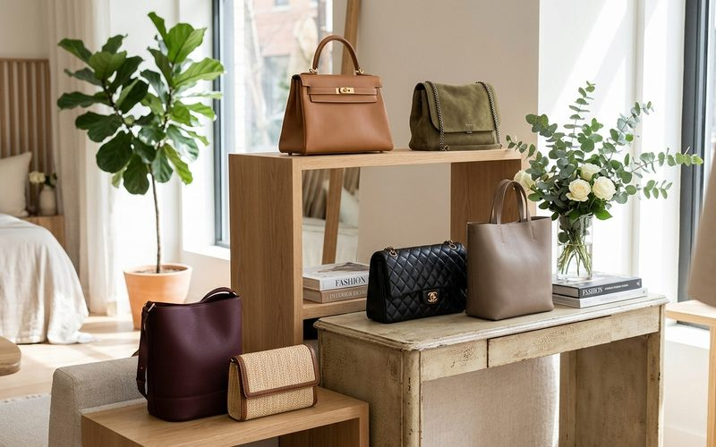

A bolsa é o último detalhe que o olho percebe em um look, mas é frequentemente o que mais se lembra. Uma bolsa de couro legítimo bem cuidada, com hardware em bom estado e alça íntegra, eleva qualquer conjunto. E o inverso também é verdadeiro: uma bolsa de material baixo qualidade ou em estado ruim é capaz de enfraquecer o look mais bem montado. É por isso que garimpadores experientes prestam atenção especial a bolsas, e por isso que o Brechó Outra Vez as trata como uma das categorias mais importantes da curadoria.
Bolsas de couro genuíno de qualidade são, talvez, o item de moda com melhor relação custo-benefício no brechó. Uma bolsa de couro bem construída pode durar décadas, e ao contrário de outros materiais, o couro legítimo melhora com o uso, desenvolvendo uma patina que o mercado chama de "character" e que é impossível de comprar nova.
A bolsa tote de couro em tamanho médio é a mais versátil de todas: cabe documentos, um estojo de maquiagem, a agenda e ainda tem espaço. Combine com qualquer look, jeans e camisa, terno, vestido, sem criar ruído visual. É a bolsa do trabalho, do mercado, da livraria, do fim de semana. No brechó, as bolsas tote de couro aparecem em um estado que o mercado atual raramente oferece pelo mesmo preço.
A bolsa envelope ou clutch é a escolha para eventos: ela concentra a atenção no detalhe sem competir com o look. Em couro, camurça ou tecido elaborado, uma clutch de brechó pode ter pedrarias, bordados ou metalizados que as versões atuais de preço equivalente não replicam. A bolsa a tiracolo pequena, crossbody, é a escolha do dia a dia ativo: prática, segura, e na versão de couro legítimo, elegante o suficiente para transitar entre o casual e o semiformal.
O primeiro critério é o material: couro legítimo versus couro sintético (courvin, PU). O courvin descasca, observe as bordas e dobras internas para identificar sinais de descascamento. Couro legítimo desenvolve marcas de uso, mas não descola. Observe também o hardware: zíperes, fechos e argolas devem estar em bom funcionamento. Um zipper que trava ou um fecho que não fecha com segurança são problemas que podem ser difíceis de resolver.
Verifique o interior: o forro deve estar integro, sem manchas excessivas ou odores que resistam à limpeza. A alça deve ser verificada nos pontos de costura, que são os primeiros a fragilizar. Uma alça que está por um fio nos pontos de fixação é risco de ruptura iminente, mas alças com desgaste uniforme geralmente têm ainda muito uso pela frente.
Bolsas bem garimpadas são companheiras de longa data. Cada arranhão, cada marca de uso, cada patina desenvolvida ao longo dos anos não é defeito, é o registro de uma vida vivida com estilo. E quando essa história chega até você no brechó, você se torna a próxima pessoa a acrescentar mais um capítulo a ela.